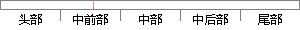

本课题使用高斯混合模型建模比较的方法实现声纹识别的关键技术。
片段位置图

相似结果|
相似片段 1：识别的几个阶段，详细阐述了说话人识别技术的特征提取，模型建立等环节。声纹识别的建模有很多种技术，目前高斯混合模型以其建模简单、性能好、与文本无关等特性是使用最多的建模方法之一。本文介绍了高斯模型的建立
|
※ 片段修改建议 ※
近似词参考：- 使用：利用
- 混合：夹杂 混淆
- 模型：模子
- 比较：比力 对照 对比
- 方法：方式 要领 法子
- 别的：此外 另外 其它 其余
系统自动生成语句：本课题利用高斯夹杂模子建模比力的方式实现声纹识此外关键技术。
注：本片段修改建议为系统自动生成，仅供参考。